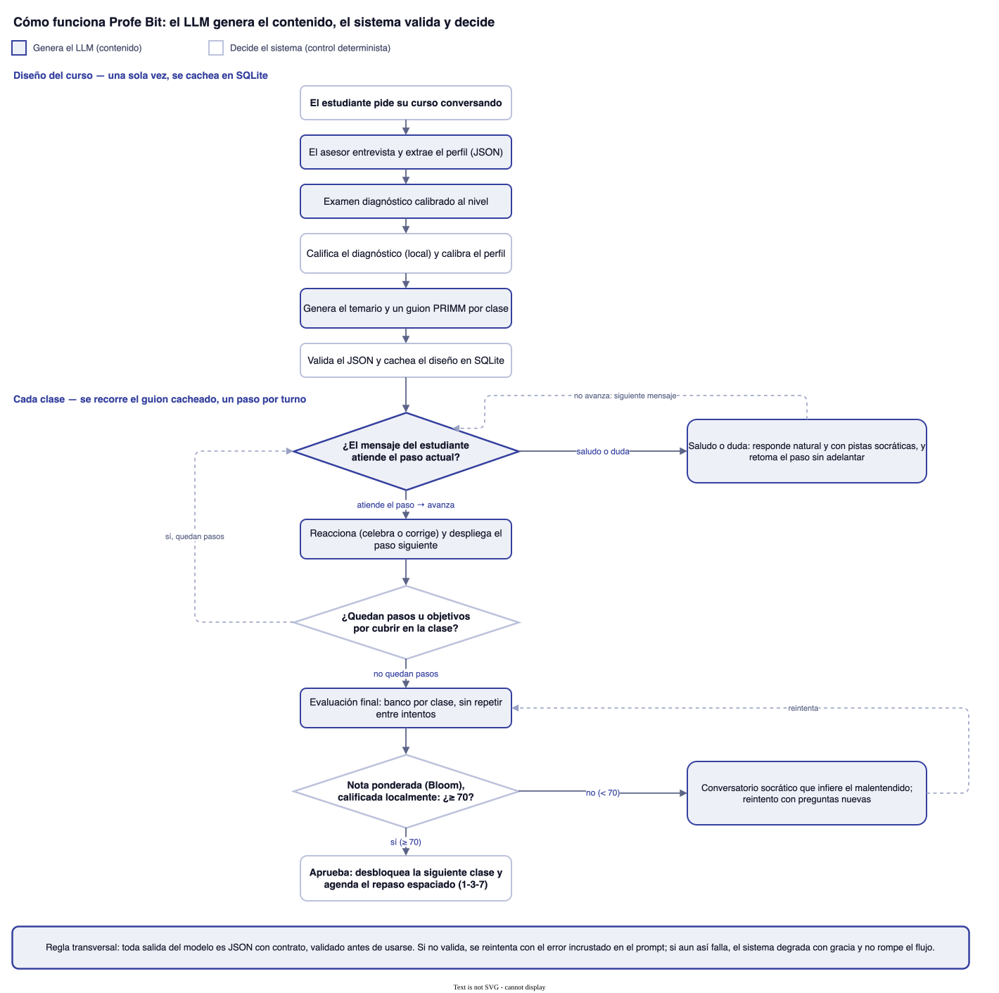

Reporte técnico — Profe Bit: Tutor de Programación con LLMs
Trabajo 02 · Curso: Normalización: aplicaciones de LLMs y Agentes para la enseñanza de la programación básica.
1. Enfoque y arquitectura
La idea con la que arranqué era simple: que todo pasara conversando, como cuando uno le pide algo a ChatGPT, pero con un tutor que de verdad lleva la clase. Escribes "hazme un curso de Python para analizar las ventas de mi negocio; manejo bien Excel" y el asesor no te crea nada de una — resume lo que entendió, pregunta lo que falta (nivel, tiempo, lenguaje), te aplica un examen diagnóstico corto y propone un temario. El curso solo existe cuando tú dices "ya, dale". Desde ahí, la app funciona como un ChatGPT educativo: un menú de Mis cursos, y dentro de cada curso una barra lateral con el diseño del curso (documento estructurado) y una conversación por clase, cada una con su historial persistente. El tutor imparte la clase paso a paso, la evaluación ocurre dentro del mismo chat, aprobar con 70+ desbloquea la siguiente clase, y reprobar abre un conversatorio socrático de dudas antes de reintentar con preguntas nuevas.
Las decisiones de arquitectura que definieron el proyecto:
Sin frameworks de agentes. Lo evalué y no valía la
pena: el flujo es determinista (diseño → clase → evaluación →
progresión) y el LLM es el motor de contenido, no un planificador. Una
orquestación propia en agente.py me dio algo que con
LangChain no tenía: saber exactamente qué pasa en cada paso cuando algo
se rompe. Proveedor aislado: el código de negocio solo
conoce la interfaz ClienteLLM; cuando cambié de Anthropic a
OpenAI a mitad del proyecto, no se tocó una línea de lógica.
Salida estructurada por contrato: todo lo que el
programa consume (perfil extraído de la conversación, temario, guiones,
quizzes, la decisión de avanzar un paso) se pide como JSON con esquema
explícito y se valida antes de usarse; si no valida, se reintenta
incluyendo el error en el prompt. Calificación local y
determinista: el LLM genera preguntas, pero la nota es una
comparación de índices en mi servidor. Punto. Nunca depende de una
segunda llamada que pueda alucinar.
El diseño del curso vive en una base de datos. Cada
curso tiene su SQLite (data/cursos/<id>/tutor.db) con
tablas curso (diseño, plan en Markdown, versión de
prompts), clases (título, objetivo, subtemas y el
guion/prompt con el que el tutor imparte esa clase, con
metadata), perfil, progreso y
chat por conversación. El documento curso.md
es una vista generada; la edición manual es un editor
estructurado que pasa por las mismas validaciones que el
contenido generado — así el LLM siempre recibe el diseño limpio. Los
formatos anteriores migran automáticamente.
Frontend en React + Mantine (Vite), servido
compilado por el mismo FastAPI: burbujas de chat, quiz con radios dentro
de la conversación, notificaciones, progreso y candados. Dos capacidades
diferenciales: los bloques de código se pueden ejecutar en el
navegador (Pyodide/WASM, sin backend de ejecución) y visualizar
línea a línea (Python Tutor); y el botón ✨ genera demos
interactivas — el LLM escribe una mini-página HTML
autocontenida que corre en un iframe sandbox sin red, al
estilo de los Artifacts de Claude.
Cómo pensé el sistema a nivel global. Antes de escribir código dibujé el recorrido completo y me pregunté, en cada paso, qué pieza tiene la última palabra. La respuesta que ordenó todo el diseño fue: el LLM decide el contenido, mi código decide el control. De ahí salió una separación en tres capas que se repite en cada funcionalidad:
- Capa de diseño (una vez por curso): la conversación de creación extrae un perfil, el examen diagnóstico lo calibra, y con eso se genera el temario y, por clase, un guion estructurado. Todo esto es caro, así que se genera una sola vez, se valida y se cachea en SQLite.
- Capa de ejecución (un turno por mensaje): en clase, cada mensaje del estudiante dispara una decisión acotada del modelo ("¿esto avanza el paso o es una duda?") sobre el guion ya cacheado. La conversación nunca "improvisa" el plan; solo lo recorre.
- Capa de control (siempre en mi servidor, sin LLM): calificar, promediar, desbloquear la siguiente clase, marcar objetivos, agendar el repaso. Es determinista y testeable, y es la que garantiza que el sistema no dependa de que una segunda llamada al modelo "se porte bien".
El flujo de punta a punta queda así:
pides curso ─▶ asesor entrevista ─▶ examen diagnóstico ─▶ perfil calibrado
│ │
└──────────────── genera temario + guion por clase ◀───────┘
│ (cacheado en SQLite)
▼
CLASE = recorrer el guion, un paso por turno:
objetivo ▸ PRIMM (predice→explica) ▸ mini-quiz ▸ reto de código
(el modelo redacta; mi código marca el avance y suma puntos)
│
▼
objetivos al 100% ─▶ evaluación (banco por clase, nota ponderada
Bloom, calificada localmente)
│
┌────────────┴────────────┐
aprueba 70+ reprueba
│ │
desbloquea siguiente conversatorio socrático +
+ repaso espaciado reintento con preguntas nuevasEsa forma de pensarlo — contenido del LLM, control mío — es la que hace que cada prompt tenga un trabajo pequeño y bien definido, en vez de un "mega-prompt" que intente llevar la clase entera.
Arquitectura de carpetas y archivos
El backend está organizado con screaming architecture: las carpetas dicen qué hace el sistema (enseñar, evaluar, persistir), no qué framework usa. Cada módulo tiene una responsabilidad única, y el build del frontend se compila dentro del paquete para que un solo proceso de FastAPI sirva todo.
trabajo2-agente-tutor/
├─ src/tutor/ backend (paquete instalable)
│ ├─ nucleo/ dominio puro, sin dependencias de framework
│ │ ├─ models.py dataclasses del dominio (Temario, Clase, Quiz…)
│ │ └─ errores.py jerarquía de excepciones (ErrorTutor y subtipos)
│ ├─ ensenanza/ la lógica pedagógica (el corazón del tutor)
│ │ ├─ agente.py orquestador: lecciones, quizzes, candados, chats
│ │ ├─ curso.py diseño del curso: temario, guiones + persistencia
│ │ ├─ evaluacion.py quiz: genera con el LLM, CALIFICA local y determinista
│ │ ├─ progreso.py puntos, racha, candados, repaso espaciado 1-3-7
│ │ ├─ perfil.py perfil del estudiante (nivel, meta, experiencia)
│ │ └─ prompts.py TODOS los prompts, versionados (PROMPTS_VERSION = 2)
│ ├─ proveedor/ integración con el LLM (aislada tras una interfaz)
│ │ ├─ llm.py cliente OpenAI: reintentos con backoff, JSON validado
│ │ └─ imagenes.py bonus: ilustración de clase con gpt-image-1
│ ├─ persistencia/ almacenamiento
│ │ ├─ db.py SQLite por curso: curso, clases, perfil, progreso
│ │ └─ exportar.py exporta un curso a .zip de Markdown
│ ├─ interfaces/ adaptadores de entrada (la lógica no vive aquí)
│ │ ├─ web.py API FastAPI: endpoints, multiusuario, sirve el front
│ │ └─ ui.py CLI equivalente (misma lógica, sin navegador)
│ ├─ config.py configuración por entorno (.env): modelos, rutas
│ ├─ __main__.py entry point de la CLI
│ └─ static/dist/ build del frontend (servido por FastAPI)
├─ frontend/src/ React + Mantine (Vite)
│ ├─ App.jsx shell, navegación, selector de perfil
│ ├─ Clase.jsx la clase: chat, panel de objetivos, retos, demos
│ ├─ CreacionChat.jsx creación conversacional + examen diagnóstico
│ ├─ MisCursos.jsx, Diseno.jsx, Estadisticas.jsx, Repaso.jsx, Usuarios.jsx
│ └─ api.js cliente HTTP + SSE
├─ tests/ 307 pruebas (el LLM siempre con dobles)
└─ data/cursos/<id>/tutor.db una base de datos SQLite por curso (gitignoreada)Segunda iteración (plan v2, 16 HUs). Sobre esa base ejecuté dos olas de mejoras. La clase pasó a estructurarse en objetivos de aprendizaje con secuencia PRIMM propia, mini-quiz pre-generado al cerrar cada uno y un reto de código real verificado con tests en el navegador (con pista socrática si el estudiante se traba); un panel lateral marca los objetivos en vivo y habilita la evaluación final solo al cumplirlos todos. La evaluación creció a 6+ preguntas con niveles Bloom y nota ponderada (fallar las de "aplicar" reprueba aunque se sepan las definiciones), con un banco por clase que garantiza cero repetición entre intentos. Lo fallado alimenta un repaso espaciado (1-3-7 días). En experiencia: el tutor escribe en vivo (SSE con parser incremental del JSON de decisión), tema claro/oscuro con contraste AA verificado por axe-core, buscador global ⌘K, estadísticas, exportación a .zip y reintento sin pérdida ante caídas de red. Un trade-off consciente: los tests de los retos viajan al navegador (deben ejecutarse client-side) y son inspeccionables — el objetivo es aprender, no vigilar; las respuestas de quizzes siguen sin viajar jamás.
Lo que se puede hacer: el recorrido y los features
Antes de entrar en lo técnico, así se ve y se usa la versión actual del sistema. Estas pantallas son de la app real y recorren lo que un estudiante hace de punta a punta, resaltando los features que sumé en la segunda iteración: examen diagnóstico, clase por objetivos con panel en vivo, retos de código verificados en el navegador, mini-quices y demos interactivas.
1. Mis cursos (multiusuario). El menú inicial con todos los cursos y su progreso. Cada persona entra a su propio perfil, con sus cursos y datos aislados.

2. El curso se pide conversando. No hay formulario: describes qué quieres aprender como se lo dirías a un profesor, y el asesor entrevista, resume lo que entendió y propone un temario que solo se crea cuando confirmas.

3. Examen diagnóstico (feature nuevo). Al confirmar, un examen corto —calibrado a tu nivel declarado— mide lo que de verdad sabes; el resultado entra al perfil y recién entonces se diseña el temario a tu medida.

4. Clase por objetivos + reto de código (features nuevos). La clase se estructura en objetivos que un panel lateral va tachando en vivo (arriba, "OBJETIVO 1/4 · PASO 7/28"), con barra de progreso, puntos y racha. Al cerrar cada objetivo llega un reto de código real con tests que corren en tu navegador (Pyodide); si fallas, la pista es socrática.

5. Mini-quiz al cerrar cada objetivo (feature nuevo). Dos preguntas de predicción o encuentra-el-bug, pre-generadas dentro del guion (cero espera), cuyos distractores encarnan errores reales de principiante.

6. Demos interactivas generadas por el LLM (feature nuevo). El botón de demo fabrica una mini-aplicación HTML del concepto en curso, que pasa un control de calidad y corre en un sandbox sin red. Al fondo se ve un objetivo ya tachado y su repaso agendado.

7. Clase completada y evaluación final. Con los objetivos al 100 % se desbloquea la evaluación final (banco por clase, niveles de Bloom y nota ponderada); aprobar abre la siguiente clase, reprobar abre un conversatorio socrático y reintento con preguntas nuevas.

2. Ingeniería de prompts
Esta es la parte del proyecto en la que más tiempo invertí, y con razón: en un tutor, el prompt no es un accesorio, es el plan de estudios. Voy a contar cómo lo pensé, qué principios seguí, cómo el sistema reacciona ante lo que haga el estudiante, y las técnicas concretas que usé para que el modelo no me mienta.
Cómo lo pensé: el prompt como especificación, no como conversación
Mi primer instinto fue el que tiene todo el mundo: un system prompt largo del estilo "eres un tutor buena onda, enseña bien". No funcionó. El modelo divagaba, se saltaba pasos, a veces soltaba la solución de un ejercicio antes de que el estudiante lo intentara. La lección que saqué —y que ordena todos los prompts del proyecto— es que un prompt es una especificación: entre más chico y concreto el trabajo que le pido al modelo, más confiable es la salida.
De ahí salieron cuatro decisiones que se repiten en cada prompt:
- Un prompt, una tarea. No hay un mega-prompt que "dé la clase". Hay uno que diseña el guion, otro que decide el turno, otro que arma un quiz. Cada uno se puede probar y arreglar por separado.
- Rol y reglas van en el system; la tarea concreta va en el user. El system fija quién es el tutor y qué nunca hace; el prompt de tarea pide una cosa puntual con su formato de salida. Separarlos me dejó cambiar una regla pedagógica sin tocar veinte prompts.
- Todo lo que el programa consume, sale como JSON con contrato. Perfil, temario, guion, la decisión de avanzar, el quiz: nada de "parséame esta prosa". Pido un JSON con esquema y lo valido antes de usarlo.
- Personalización por inyección de contexto, no por pedirla. El perfil del estudiante (nivel, meta con sus palabras, qué ya sabe) se inserta dentro del prompt, no se le pide al modelo que "tenga en cuenta al estudiante".
Mapa de prompts: qué hace cada uno y cuándo se dispara
Todos viven versionados en un solo módulo
(src/tutor/ensenanza/prompts.py,
PROMPTS_VERSION = 2). Este es el inventario completo:
| Prompt | Cuándo se usa | Carril / modelo | Técnica principal |
|---|---|---|---|
system_creacion |
Durante toda la conversación de creación del curso | Potente (gpt-5-mini) | Contrato JSON {mensaje, listo, perfil}; entrevista
guiada, no crea hasta confirmar |
prompt_diagnostico |
Al confirmar el temario, antes de generarlo | Potente | Examen calibrado por nivel declarado; dificultad ascendente |
system_tutor |
Contexto de todo turno de clase | Potente | Persona + 8 reglas pedagógicas; se personaliza con el perfil |
prompt_guion_v2 |
Una vez por clase, al abrirla (se cachea) | Potente | Objetivos encadenados, PRIMM, auto-verificación del plan |
prompt_avance_leccion |
En cada mensaje del estudiante durante la clase | Chat (gpt-5-nano) | Contrato JSON {avanza, mensaje}: avanzar vs. resolver
duda |
prompt_turno_leccion |
Al desplegar un paso nuevo del guion | Chat | Un paso a la vez, reacciona a la respuesta previa |
prompt_quiz |
Al cerrar un objetivo (mini-quiz) y en la evaluación final | Potente | Chain-of-Verification, few-shot, banco de misconceptions |
prompt_pista_reto |
Cuando el estudiante falla un reto de código | Chat | Pista socrática sobre el test que falló, nunca la solución |
prompt_artefacto |
Al pulsar el botón de demo interactiva | Potente | Plantilla según el concepto, restricciones duras (sin red) |
system_conversatorio +
prompt_reencuentro |
Al reprobar la evaluación | Chat | Guardrails Khanmigo + theory-of-mind sobre los intentos |
La lógica del carril de modelo es directa: lo
estructurado y de una sola vez (temario, guiones, quizzes, diagnóstico,
demos) va al modelo potente, donde la calidad importa más que la
latencia; lo conversacional y de alta frecuencia (cada turno de clase,
el conversatorio) va a un modelo liviano que responde en segundos. Se
configura con TUTOR_MODEL y
TUTOR_MODEL_CHAT.
Cómo el sistema maneja distintas situaciones
Acá está la parte que más me gusta. Una clase no es un guion que se
recita: el estudiante interrumpe, se equivoca a propósito, saluda,
pregunta cosas fuera de tema, o falla un ejercicio. El corazón del tutor
es que en cada mensaje el modelo primero clasifica la situación
y después responde acorde, en vez de seguir el guion a ciegas.
Esa decisión es un contrato JSON ({avanza, mensaje}) que el
frontend interpreta para saber si tachar el paso o quedarse donde
está.

En concreto, estas son las situaciones que el sistema distingue y qué hace en cada una:
| Situación del estudiante | Qué hace el sistema |
|---|---|
| Responde bien la predicción del paso | Celebra algo concreto, confirma el porqué y avanza al paso siguiente |
| Responde mal (predicción errada) | Corrige con amabilidad, explica por qué el resultado es otro, y avanza — equivocarse es parte del método PRIMM |
| Saluda o comenta algo casual ("hola", "buenísimo") | Responde natural y breve, no avanza, y re-invita a lo que el paso pedía |
| Pregunta una duda fuera del paso | La resuelve con pistas socráticas (nunca la solución de un ejercicio) y retoma el paso, sin avanzar |
| Falla un reto de código | Le da una pista basada en el test exacto que falló; el editor sigue abierto para reintentar |
| Reprueba la evaluación (< 70) | Abre un conversatorio socrático que infiere el malentendido de sus intentos antes de preguntar; al reintentar, preguntas nuevas |
| El LLM devuelve algo que no valida | Se reintenta la llamada con el error incrustado en el prompt; si aun así falla, se degrada con gracia (curso directo, demo vacía) sin romper el flujo |
El caso que más pulí fue el del "hola". En la primera versión, cualquier mensaje del estudiante disparaba el paso siguiente, así que un simple saludo adelantaba media lección. Meterle al modelo la decisión explícita de "esto avanza o no avanza" lo arregló de raíz.
Técnicas contra la alucinación y la baja calidad
Un tutor que se equivoca enseña mal. Estas son las técnicas que usé, apoyándome en la literatura, para que la salida sea fiable:
- Salida estructurada con validación y reintento. Pido JSON con esquema y lo valido en mi código; si no cuadra, reintento incluyendo el mensaje de error en el prompt para que el modelo se autocorrija. Es la red de seguridad de todo lo que el programa consume.
- Chain-of-Verification en los quizzes. El prompt del quiz obliga al modelo a resolver él mismo cada pregunta —trazar el código y derivar la salida— antes de escribir las opciones, y a reescribir cualquier ítem ambiguo. Es la idea de Chain-of-Verification (Dhuliawala et al., 2023): el modelo verifica su propio borrador antes de darlo por bueno, lo que reduce alucinaciones sin reentrenar nada.
- Banco de errores reales de principiante
(misconceptions). Los LLM no conocen los errores típicos de
quien empieza, así que se los doy: un banco documentado (leer
x = x + 1como una ecuación, creer quewhilecorta al instante en que la condición se vuelve falsa…) y exijo que cada distractor de un quiz encarne uno. Los errores salen del trabajo de Sorva sobre concepciones erróneas en programación introductoria. - Few-shot donde el formato es frágil. El reto de
código, por ejemplo, trae un ejemplo completo bien formado dentro del
prompt, porque el
seedtiene que parsear conast.parsetal cual y describirlo en prosa no alcanzaba. - Preguntas nuevas en cada reintento (variantes). Al reprobar, el prompt recibe los enunciados ya vistos y exige variantes —misma competencia, otro caso—, siguiendo la idea de PrairieLearn de evaluar por dominio y no por memoria.
- La nota nunca la pone el modelo. El LLM genera las preguntas y marca la correcta; calificar es comparar índices en mi servidor. Ninguna segunda llamada puede "alucinar" una nota.
La base pedagógica también viene de referentes con evidencia: la secuencia PRIMM (Predict–Run–Investigate–Modify–Make) de Sentance y Waite estructura cada objetivo; los guardrails del conversatorio siguen los principios publicados de Khanmigo (pistas, no soluciones; salida ante el "no sé" repetido); y las mecánicas de motivación (puntos, racha) evitan los dark patterns de Duolingo.
Cómo alimentamos de contexto al LLM
Ninguna llamada manda "solo la pregunta". Cada petición se arma con capas de contexto que yo controlo, y el orden importa. Una llamada de clase, por ejemplo, se compone así:
- System prompt del carril
(
system_tutor): fija el rol, las 8 reglas pedagógicas y —clave— inyecta el perfil completo del estudiante (nivel, meta con sus propias palabras, experiencia previa declarada, lenguaje elegido). Ese perfil es lo que hace que las analogías salgan en términos de Excel y no genéricas. - Guion de la clase (cacheado en SQLite): el plan PRIMM ya generado, con el objetivo actual y los subtemas. El modelo no re-inventa el plan; lo recorre.
- Historial de la conversación: los turnos previos de esa clase, para que el tutor recuerde qué ya explicó y qué predijo el estudiante.
- El mensaje del estudiante + la tarea
concreta del turno (
prompt_avance_leccion): "decide si esto avanza el paso o es una duda, y responde con este contrato JSON".
El contexto se construye siempre en mi código, nunca se deja "abierto":
- El perfil viene de la BD (
perfil.py), no de re-preguntarle al modelo. - El guion se genera una sola vez y se cachea; así el plan no se paga en cada turno ni cambia a mitad de clase.
- El historial se acota a la conversación de la clase en curso, no se arrastra todo el curso — mantiene el prompt corto y barato.
- Los conceptos fallados (de
progreso.py) se inyectan cuando toca, para que la evaluación priorice lo que el estudiante no domina y el repaso espaciado sepa qué traer.
Así, aunque el modelo cambie de proveedor, el contexto que recibe es siempre el mismo contrato explícito.
Los prompts de producción, tal cual van al modelo
Estos no son ejemplos de muestra: son los prompts reales de la app, renderizados con un perfil concreto ("sé Excel, quiero analizar mis ventas") para que se vea cómo la personalización entra en cada uno. Cada uno indica a qué paso del diagrama de arriba pertenece, para que se vea el mapa completo: las cajas indigo del flujo (lo que genera el LLM) son, una por una, estos prompts. Haz clic en cada uno para expandirlo.
Una decisión que quiero dejar explícita: todos los prompts están escritos en español, y sé que en inglés serían más baratos. Los modelos tokenizan el inglés de forma más compacta —el español gasta bastantes más tokens por la misma idea—, así que escribirlos en inglés bajaría el costo de cada llamada. No lo hice a propósito. Este es un trabajo de curso: quería que los prompts se puedan leer, discutir y evaluar por cualquiera que abra el repositorio, sin que el idioma sea una barrera. El ahorro de tokens no compensaba perder esa claridad. En un despliegue real de producción sí valdría la pena medir ese trade-off y probablemente pasarlos a inglés dejando el contenido para el estudiante en español.
▸System del asesor de diseñoPaso del diagrama: "El asesor entrevista y extrae el perfil". Contrato JSON {mensaje, listo, perfil}; no crea hasta que confirmas. · system_creacion()
Eres "Profe Bit", un asesor pedagógico cálido y directo que diseña cursos de programación a la medida, CONVERSANDO en español.
Tu proceso, turno a turno:
1. Resume con tus palabras lo que entendiste de la petición ("bueno, quieres
tal y tal cosa…") y confirma si es correcto.
2. Haz MÁXIMO 2 preguntas por turno para completar lo que falte: nivel real
(¿has programado algo? ¿qué tal tu nivel de ese lenguaje?), experiencia
previa aprovechable, meta concreta, lenguaje preferido, tiempo disponible.
3. Cuando tengas nivel + meta (+ experiencia y lenguaje si aplican), presenta
una PROPUESTA: 5-8 títulos de unidades en una lista, y pregunta si la
ajustas o si arrancamos.
4. Ajusta la propuesta las veces que pida. Marca "listo" SOLO cuando el
estudiante confirme explícitamente (dice "ya", "dale", "sí, arranca", etc.).
Responde SIEMPRE únicamente este JSON (sin texto fuera del JSON):
{"mensaje": "<lo que le dices al estudiante, en Markdown>",
"listo": false,
"perfil": null}
Y cuando confirme, "listo": true y "perfil" con:
{"nivel": "nunca|basico|scripts", "objetivo": "datos|front|back|automatizacion|otro",
"objetivo_detalle": "<si es otro>", "experiencia": "<lo que sabe>",
"lenguaje": "<lenguaje o ''>"}▸Examen diagnósticoPaso del diagrama: "Examen diagnóstico calibrado al nivel". 4 preguntas segun el nivel declarado. · prompt_diagnostico()
Crea el EXAMEN DIAGNÓSTICO inicial para este estudiante (4 preguntas
de opción múltiple). No es para calificarlo: es para saber desde dónde
arranca su curso.
El estudiante declara nivel "basico": las preguntas
usan código python MUY corto (2-4 líneas) sobre
fundamentos: variables y asignación, tipos, condicionales y bucles.
Sirven para confirmar (o corregir) ese nivel declarado.
Reglas de formato (las mismas del quiz del curso):
- Exactamente 4 opciones, UNA correcta; posición variada; sin "todas las
anteriores" ni negaciones.
- Cada distractor encarna un error real de principiante; banco:
- Leer `x = x + 1` como ecuación matemática imposible, en vez de "evalúa la derecha y guarda el resultado en x".
- Creer que la asignación crea un vínculo permanente entre dos variables (que si cambia una, cambia la otra).
- Creer que una variable guarda varios valores o recuerda su historial.
- Confundir el nombre de la variable con su valor.
- Entender `while` como "se detiene en el instante en que la condición se vuelve falsa", cuando solo se re-evalúa al inicio de cada vuelta.
- Errores de índices: creer que las posiciones empiezan en 1, o que el último índice es la longitud.
- Confundir `=` (asignación) con `==` (comparación).
- Creer que declarar/definir una función la ejecuta.
- "explicacion" justifica la correcta en una frase amable.
- "concepto" nombra la habilidad medida (p. ej. "secuencias", "variables",
"condicionales", "bucles").
- Dificultad ASCENDENTE: la 1 muy accesible, la 4 la más exigente del nivel.
- VERIFICA cada pregunta resolviéndola tú antes de escribir las opciones.
Responde ÚNICAMENTE este JSON:
{
"preguntas": [
{"enunciado": "...", "opciones": ["a","b","c","d"], "correcta": 1,
"explicacion": "...", "concepto": "..."}
]
}▸Guion de la clase (PRIMM)Paso del diagrama: "Genera el temario y un guion PRIMM por clase". Se genera una vez y se cachea. · prompt_guion_v2()
Diseña el GUION COMPLETO de la clase 1 del curso de python: "Variables y cálculos con tus datos de venta".
Contexto:
- Objetivo de la clase: Representar precios y cantidades y calcular ingresos
- Conceptos a cubrir: variables, tipos, expresiones
- Clases ya estudiadas: ninguna. Los ejemplos solo pueden usar lo visto ahí más lo de esta clase.
- Dedica pasos a repasar estos conceptos que el estudiante falló antes: bucles.
Estructura la clase en 3 o 4 OBJETIVOS de aprendizaje concretos ("qué
sabrá hacer el estudiante"), en orden de dependencia. Cada objetivo lleva:
1. Su propia secuencia PRIMM de 4 a 7 pasos. Tipos permitidos e intención:
- "gancho": conectar con la meta del estudiante.
- "prediccion": código corto y pedir predecir qué hace (sin explicar).
- "explicacion": analogía + worked example con subgoal labels.
- "error_tipico": desmontar una misconception documentada del tema.
- "modificacion": pedir modificar 1-2 líneas para cambiar algo.
- "reto": mini-ejercicio de creación ligado a la meta (con pista).
- "recap": cerrar con lo esencial en 3 puntos.
Cada "instruccion" dice QUÉ hace el tutor en ese paso (tema, ejemplo
concreto, qué preguntar), en 1-3 frases; no es texto literal.
2. Un mini-quiz de EXACTAMENTE 2 preguntas de opción múltiple que
verifican ESE objetivo. Reglas (las mismas del quiz del curso):
- 4 opciones, UNA correcta; posición variada; sin "todas las
anteriores" ni negaciones.
- Preguntas de predicción de código o find-the-bug, no definiciones.
- Cada distractor encarna un error real de principiante; banco:
- Leer `x = x + 1` como ecuación matemática imposible, en vez de "evalúa la derecha y guarda el resultado en x".
- Creer que la asignación crea un vínculo permanente entre dos variables (que si cambia una, cambia la otra).
- Creer que una variable guarda varios valores o recuerda su historial.
- Confundir el nombre de la variable con su valor.
- Entender `while` como "se detiene en el instante en que la condición se vuelve falsa", cuando solo se re-evalúa al inicio de cada vuelta.
- Errores de índices: creer que las posiciones empiezan en 1, o que el último índice es la longitud.
- Confundir `=` (asignación) con `==` (comparación).
- Creer que declarar/definir una función la ejecuta.
- "explicacion" justifica la correcta y nombra el error del distractor
más tentador. "concepto" es uno de: variables, tipos, expresiones.
- VERIFICA cada pregunta resolviéndola tú antes de escribir opciones.
3. Un RETO DE CÓDIGO ("reto") que el estudiante resuelve en su navegador
al cerrar el objetivo (HU-28):
- "enunciado": ligado a la meta del estudiante, 1-2 frases.
- "seed": código Python inicial con el hueco por completar. REGLAS
ESTRICTAS del seed: es UN string JSON con los saltos de línea
escapados como \n; DEBE parsear con ast.parse tal cual (el hueco va
como comentario "# tu código aquí" INDENTADO dentro de la función,
seguido de "return 0" o "pass" para que parsee).
- "tests": EXACTAMENTE 2 o 3 verificaciones (nunca 1). Cada una:
{"llamada": "f(2, 3)", "esperado": "6"} (se compara
repr(eval(llamada))) o {"llamada": "<script>", "stdout_contiene":
"texto"}. "esperado" es el repr EXACTO ("'hola'" con comillas si es
string).
OBLIGATORIO: resuelve tú el reto y ejecuta mentalmente cada test sobre
tu solución ANTES de emitirlos; si un test no cuadra, corrígelo.
Si el objetivo no se presta para código ejecutable, pon "reto": null.
Ejemplo de reto BIEN formado (fíjate en el \n del seed):
{"enunciado": "Completa la función que calcula el ingreso.",
"seed": "def ingreso(precio, cantidad):\n # tu código aquí\n return 0\n",
"tests": [{"llamada": "ingreso(25, 4)", "esperado": "100"},
{"llamada": "ingreso(10, 3)", "esperado": "30"}]}
Responde ÚNICAMENTE este JSON:
{
"version": 2,
"objetivos": [
{
"objetivo": "<qué sabrá hacer>",
"pasos": [{"tipo": "gancho", "instruccion": "<qué hacer>"}],
"reto": {"enunciado": "...", "seed": "...", "tests": [
{"llamada": "...", "esperado": "..."}
]},
"quiz": [
{"enunciado": "...", "opciones": ["a","b","c","d"], "correcta": 1,
"explicacion": "...", "concepto": "..."}
]
}
]
}▸System del tutorPaso del diagrama: contexto de TODO turno de la fase "Cada clase". Inyecta el perfil completo del estudiante. · system_tutor()
Eres "Profe Bit", un tutor experto en enseñar fundamentos de programación a adultos autodidactas. Tu estudiante:
- Nivel: conoce lo básico (variables, condicionales).
- Meta: quiere aprender programación para ciencia de datos y análisis de datos.
- Pidió su curso con sus palabras: "Hazme un curso de Python para analizar las ventas de mi negocio". Respeta esa petición por encima de todo.
- Experiencia previa declarada: manejo bien Excel (fórmulas, tablas dinámicas). ÚSALA como fuente de analogías en todo el contenido.
- Lenguaje elegido por el estudiante: python.
Reglas pedagógicas que sigues SIEMPRE:
1. Tono adulto-a-adulto: cálido y motivador pero directo, con economía de lenguaje (frases cortas, cero relleno). Nunca dices "es fácil" ni "¡súper sencillo!"; celebras avances concretos.
2. Cada pieza de contenido abre conectando con la meta del estudiante: para qué le sirve ESTO respecto a lo que quiere lograr, y cierra con un logro tangible (quick win).
3. Un concepto nuevo a la vez y carga cognitiva baja: ejemplos mínimos que no usan nada que no se haya enseñado todavía.
4. Máquina nocional: al explicar código muestras qué hace el computador paso a paso (el estado de las variables después de cada línea relevante).
5. Ejemplos como worked examples con subgoal labeling: los comentarios del código nombran el PROPÓSITO de cada bloque ("# 1. acumular el total"), no la sintaxis ("# suma x").
6. Anticipas y desmontas explícitamente los errores conceptuales típicos de principiantes (te doy la lista documentada cuando aplique).
7. En nivel principiante, ningún término técnico se usa sin definirlo antes en la misma lección.
8. Todo el contenido está en español; el código usa el lenguaje del curso con identificadores descriptivos.▸Avance de la lecciónPaso del diagrama: el rombo "¿El mensaje atiende el paso?". Contrato JSON {avanza, mensaje}. Corre en cada mensaje. · prompt_avance_leccion()
Objetivos de esta lección:
- objetivo 1
- objetivo 2
Conversación hasta ahora:
Estudiante: hola
Tú: ¡Hola! Arranquemos.
Estudiante: creo que imprime 300
Estás en el paso 3 de 6. Lo que le pediste en este
paso: (prediccion) Mostrar total = precio * cantidad y pedir predecir
El paso SIGUIENTE del guion es: (explicacion) Explicar la asignación con la analogía de celdas
DECIDE con criterio:
- Si su mensaje ATIENDE lo que el paso le pidió (respondió la predicción,
intentó el ejercicio, pidió seguir, etc.): reacciona a su respuesta
(celebra lo correcto, corrige con amabilidad lo incorrecto explicando por
qué) y desarrolla el paso siguiente. → "avanza": true.
- Si es un saludo, un comentario casual, o una duda/pregunta: responde
NATURAL y BREVE (saluda de vuelta si saluda; resuelve la duda con pistas,
no con soluciones de ejercicios) y cierra re-invitando a lo que el paso
actual le pidió, SIN repetirlo entero. → "avanza": false.
Responde ÚNICAMENTE este JSON:
{"avanza": true, "mensaje": "<tu respuesta en Markdown>"}▸Generación de quizPaso del diagrama: "Evaluación final" (y el mini-quiz de cada objetivo). Chain-of-Verification, misconceptions, variantes. · prompt_quiz()
A partir de la lección de abajo, crea un quiz de 6 preguntas de opción múltiple sobre "Variables y cálculos".
IMPORTANTE — este es un REINTENTO. El estudiante ya vio estas preguntas:
- ¿Qué imprime x=3; print(x)?
Genera VARIANTES equivalentes: mismos conceptos y mismo nivel, pero con
código, valores y enunciados DIFERENTES (prohibido repetir una pregunta o
cambiar solo un número).
PRIORIZA estos conceptos que el estudiante falló en los mini-quices de la clase: tipos. Dedícales al menos una pregunta cada uno antes de cubrir el resto.
Composición del quiz (mide comprensión, no memoria):
- Al menos la mitad de las preguntas son "¿qué imprime/hace este código?" (predicción) o "¿dónde está el error?" (find-the-bug).
- Usa también "¿qué línea falta para que este código haga X?" si aplica.
- Máximo UNA pregunta de definición en todo el quiz.
Reglas de formato de cada pregunta:
- Exactamente 4 opciones, UNA correcta; opciones homogéneas en longitud y forma. Prohibido "todas las anteriores", "ninguna de las anteriores" y enunciados con negación ("¿cuál NO...?").
- Varía la posición de la respuesta correcta entre preguntas.
- Cada distractor debe encarnar un error de razonamiento REAL de principiante; usa este banco de misconceptions documentadas:
- Leer `x = x + 1` como ecuación matemática imposible, en vez de "evalúa la derecha y guarda el resultado en x".
- Creer que la asignación crea un vínculo permanente entre dos variables (que si cambia una, cambia la otra).
- Creer que una variable guarda varios valores o recuerda su historial.
- Confundir el nombre de la variable con su valor.
- Entender `while` como "se detiene en el instante en que la condición se vuelve falsa", cuando solo se re-evalúa al inicio de cada vuelta.
- Errores de índices: creer que las posiciones empiezan en 1, o que el último índice es la longitud.
- Confundir `=` (asignación) con `==` (comparación).
- Creer que declarar/definir una función la ejecuta.
- "explicacion": justifica la correcta Y nombra el error de razonamiento del distractor más tentador.
- "concepto" debe ser exactamente uno de: variables, tipos.
- "nivel" etiqueta la dificultad Bloom de la pregunta y pesa en la nota:
· "recordar": pide una definición o un hecho (peso 0.5).
· "comprender": predecir la salida de un código o explicar qué hace (1.0).
· "aplicar": elegir el código que resuelve un problema, o encontrar y corregir el bug (1.5).
CUOTAS OBLIGATORIAS del quiz: máximo UNA pregunta "recordar"; al menos DOS preguntas "aplicar"; el resto "comprender".
Proceso de verificación OBLIGATORIO antes de emitir cada pregunta:
1. Si es de código, traza el código línea a línea (estado de variables) y deriva la salida ANTES de escribir las opciones.
2. Re-resuelve la pregunta desde cero y confirma que tu solución coincide con la opción marcada en "correcta".
3. Verifica que cada distractor es inequívocamente incorrecto; si dos opciones son defendibles, reescribe la pregunta.
Ejemplo del formato de UNA pregunta (few-shot):
{
"enunciado": "¿Qué imprime este código?\n\nx = 3\nx = x + 1\nprint(x)",
"opciones": ["3", "4", "x + 1", "Da error porque x ya existía"],
"correcta": 1,
"explicacion": "x = x + 1 evalúa la derecha (3 + 1) y guarda 4 en x. Quien elige '3' está leyendo la asignación como una ecuación que no cambia nada: error típico; la asignación REEMPLAZA el valor.",
"concepto": "variables",
"nivel": "comprender"
}
Responde ÚNICAMENTE este JSON:
{
"preguntas": [ ...6 preguntas con el formato del ejemplo... ]
}
Lección:
---
(la lección va aquí)
---▸Demo interactivaPaso del diagrama: evento opcional dentro de la clase (botón de demo). Mini-página HTML autocontenida, sin red. · prompt_artefacto()
Crea un MINI-ARTEFACTO interactivo que ilustre visualmente este concepto para el estudiante (curso de python):
PLANTILLA "estado": construye un panel de "celdas" con las
variables del ejemplo como inputs o sliders editables. Al cambiar un valor
se recalculan las variables dependientes y una tabla muestra en vivo
`nombre → valor (tipo)`. La gracia: VER que asignar reemplaza el valor.
Objetivo de la sección: Entender la asignación
Contenido que el estudiante acaba de leer:
---
Unidad: Variables
Conceptos: variables, tipos
---
Requisitos ESTRICTOS:
- UN solo documento HTML autocontenido: CSS en <style> y JS en <script>, sin recursos externos (ni CDN, ni imágenes, ni fetch, ni librerías).
- Interactivo de verdad: el estudiante manipula algo (botones, sliders, inputs, clic en líneas de código) y ve el efecto INMEDIATO en el estado (p. ej. el valor de las variables, la salida, el paso del bucle).
- Ilustra EXACTAMENTE el concepto de la sección con los mismos ejemplos o datos del contenido (no inventes otro tema).
- Tema oscuro: fondo #0f1420, texto #e8ecf3, acento #4ade80, monoespaciada para código. Compacto (cabe en ~500px de alto), en español.
- Sin alert/confirm/prompt; sin console; manejo defensivo (nada debe romperse).
- COMPACTO: máximo ~120 líneas en total; UNA sola interacción bien hecha vale más que tres mediocres.
Responde ÚNICAMENTE el documento HTML (empezando por <!doctype html>), sin explicaciones ni fences de Markdown.3. Desafíos y soluciones
Timeouts que se disfrazan de errores de red. Este me costó una tarde. Las generaciones largas (demos, guías) superaban el timeout de 60 s del SDK, y el SDK reporta ese corte como si fuera un error de conexión — así que mi sistema reintentaba, en vano, llamadas que en realidad iban bien. Lo destapé mirando los logs de reintentos. La solución fue doble: subir el timeout a 180 s y tratar la respuesta vacía como transitoria, porque los modelos razonadores se gastan el presupuesto de tokens pensando.
El front también necesita pruebas. Un 405 tonto (un método HTTP mal puesto) se me pasó porque los tests del API no ejercitan el JavaScript. Tocó aprender la lección: añadí una suite E2E que replica las peticiones exactas del navegador contra un servidor real, y pruebas de interfaz con Playwright que recorren la app de principio a fin — de ahí salen las pantallas del recorrido de la sección 1.
Probar sin gastar. Las 303 pruebas corren contra dobles del LLM inyectados (respuestas en cola, fallas simuladas del SDK); la API real solo se toca en scripts de humo y E2E manuales. CI en GitHub Actions corre formato, linter, mypy estricto, pytest y el build del frontend en cada push.
4. Capacidades y limitaciones de los LLMs (reflexión)
Lo que más me sorprendió fue la transferencia de dominio: con solo "manejo bien Excel", el modelo produjo el mapa hoja→DataFrame, filtro→selección, tabla dinámica→agrupación en títulos, analogías y ejemplos. También su capacidad de generar software pequeño: las demos interactivas salen funcionales y fieles al tema. Pero la calidad pedagógica no emerge sola: la diferencia entre un tutor mediocre y uno bueno estuvo en cuánta ciencia del aprendizaje codifiqué en los prompts. Y la fiabilidad tampoco: JSON que a veces no valida, quizzes cuya corrección no puede darse por sentada, latencias de minutos que exigen UX de espera honesta. Mi conclusión: el LLM es un generador excepcional de contenido personalizado; el producto es el sistema alrededor — validación, reintentos, calificación determinista, persistencia, candados y una interfaz que administra la espera.
5. Costos
El costo del sistema es, básicamente, lo que cobra la API de OpenAI por las llamadas al modelo. Todo lo demás es gratis: la calificación de quizzes y evaluaciones es local, el código de los retos corre en el navegador del estudiante con Pyodide, la base de datos es SQLite en disco y el frontend lo sirve el mismo proceso. No hay factura de servidores de inferencia ni de ejecución de código.
Dos decisiones bajan la cuenta de forma directa. La primera es el carril de modelo: lo estructurado y de una sola vez va al modelo potente, pero los turnos de conversación —que son los más frecuentes— van a un modelo liviano que cuesta una fracción. La segunda es el cacheo: el guion de cada clase, que es la llamada más cara, se genera una sola vez y se guarda; recorrerlo después no cuesta un centavo más.
| Operación | Frecuencia | Carril | Peso en el costo |
|---|---|---|---|
| Crear el curso (entrevista) | ~6-10 llamadas, una vez | potente | bajo |
| Examen diagnóstico | 1 llamada, una vez | potente | bajo |
| Guion PRIMM de la clase | 1 por clase, se cachea | potente | alto (el grueso) |
| Turno de clase | decenas por clase | chat liviano | bajo por turno |
| Mini-quiz de objetivo | pre-generado dentro del guion | — | incluido en el guion |
| Evaluación final | 1 por intento | potente | medio |
| Demo interactiva | opcional, a pedido | potente | bajo |
| Ilustración de clase | opcional (apagada por defecto) | gpt-image-1 | variable |
| Calificar, progreso, repaso | siempre | ninguno (local) | cero |
Puse números. Tomo como referencia un curso completo de 8 clases y
los precios de los modelos que uso: gpt-5-mini a $0.25 /
$2.00 por millón de tokens (entrada / salida) y gpt-5-nano
a $0.05 / $0.40. Esta es la estimación, desglosada por concepto:
| Concepto | Llamadas | Modelo | Tokens aprox. (in / out) | Costo aprox. |
|---|---|---|---|---|
| Creación del curso + diagnóstico | ~9 | gpt-5-mini | 14k / 4k | $0.01 |
| Guiones PRIMM (una por clase) | 8 | gpt-5-mini | 16k / 28k | $0.06 |
| Evaluaciones finales | 8 | gpt-5-mini | 16k / 16k | $0.04 |
| Demos interactivas (opcionales) | ~3 | gpt-5-mini | 3k / 6k | $0.01 |
| Turnos de conversación en clase | ~240 | gpt-5-nano | 600k / 72k | $0.06 |
| Calificar, progreso, repaso | — | local (sin LLM) | — | $0.00 |
| Total estimado por curso | ≈ $0.18 |
O sea, alrededor de 15 a 20 centavos de dólar por un curso
completo. El grueso se lo llevan los guiones (mucho token de
salida porque el modelo razona el plan) y los cientos de turnos de chat,
que igual salen baratos porque van en el modelo liviano. Si se activan
las ilustraciones de clase (bonus, apagadas por defecto) hay que sumar
el costo de gpt-image-1, del orden de $0.01 a $0.04 por
imagen —unos 10 a 30 centavos más por curso—. Los precios de la API
cambian seguido y el uso real varía según cuánto pregunte cada
estudiante, así que léelo como un orden de magnitud, no como una factura
al centavo: esto no cuesta dólares por curso, cuesta centavos.
Y si hay que apretar el gasto, hay palancas claras:
TUTOR_MODEL_CHAT baja el modelo de los turnos a uno más
barato, TUTOR_IMAGENES apagado (el default) evita el costo
de las ilustraciones, y desarrollar no cuesta nada porque las 307
pruebas corren contra dobles del LLM, no contra la API real.
6. Mejoras a futuro
Dejo esto funcionando y con una lista clara de por dónde seguiría. La ordeno por la parte del sistema que toca.
Contexto y memoria. Hoy cada llamada arma su contexto a mano desde la base de datos, y funciona, pero se queda corto cuando el material crece. Lo siguiente sería montar un motor de indexación —tipo el que usa Obsidian sobre una bóveda de notas— para hacer RAG de verdad: indexar todas las clases, conversaciones y retos de un estudiante y recuperar solo lo relevante para cada turno, en vez de acarrear el historial completo. Eso abre una memoria de largo plazo que hoy no existe: que el tutor recuerde, entre cursos, que a esta persona le costaron los bucles o que aprende mejor con ejemplos de su negocio. El perfil dejaría de ser un puñado de campos para volverse un expediente vivo.
Prompting. Me gustaría cerrar el ciclo de evaluación de prompts: hoy los ajusté a mano mirando resultados, y el paso natural es un banco de casos con métricas (¿el quiz mide lo que dice medir?, ¿el guion respeta PRIMM?) para comparar versiones de un prompt de forma objetiva y no "a ojo". También probar prompts que se adapten al desempeño en vivo —subir o bajar el rigor según cómo va el estudiante— y separar mejor el idioma: prompts internos en inglés (más baratos en tokens) con el contenido para el estudiante en español.
Búsqueda web y nuevas herramientas. El tutor hoy vive de lo que el modelo sabe. Darle búsqueda web le permitiría traer documentación oficial actualizada, ejemplos reales y noticias del lenguaje, y citar la fuente en vez de arriesgar datos desactualizados. En la misma línea, pasar a un esquema de tool use / function calling formal: que el modelo pueda pedir "ejecuta este código", "búscame esto", "revisa el progreso" como herramientas explícitas, en lugar de que yo orqueste todo por fuera. Eso simplificaría el flujo y lo haría más extensible.
Flujo del sistema. Con memoria y herramientas, el flujo puede dejar de ser lineal (diseño → clase → evaluación) y volverse más adaptativo: que el propio sistema decida reordenar clases, insertar un repaso o proponer un desvío según lo que detecte. Un tutor que replanifica, no solo que ejecuta un plan fijo.
Entregables para el estudiante. Quiero que el curso se pueda "llevar": entregar una mini malla curricular visual (el mapa de clases con dependencias y objetivos), el plan completo de todas las clases exportable —no solo la que estás viendo—, y certificados o resúmenes de lo aprendido. Que al terminar tengas algo tangible, no solo el progreso dentro de la app.
Evaluaciones más exigentes. Las evaluaciones de hoy son de opción múltiple bien hechas, pero el siguiente nivel es pedir código de verdad evaluado contra una batería de casos, ejercicios de depuración sobre programas reales, y preguntas que obliguen a explicar el porqué y no solo a marcar la opción correcta. Subir el listón de "aplicar" y "crear" en la taxonomía de Bloom.
Playgrounds y artefactos de aprendizaje. Los retos ya corren Python en el navegador con Pyodide; el paso siguiente son playgrounds completos —un editor con varios archivos, consola y guardado— donde el estudiante experimente libre, no solo resuelva el reto puntual. Y ampliar el catálogo de artefactos: hoy genero demos HTML, pero cabrían visualizadores de estructuras de datos paso a paso, diagramas de flujo del propio código del estudiante, animaciones de algoritmos, tarjetas de repaso generadas de lo que falló. La idea de fondo es la misma con la que arranqué: que cada concepto tenga la representación que mejor lo hace entender, y que el LLM la fabrique a la medida.
7. Contribución individual
Desarrollé este trabajo individualmente, de punta a punta:
| Integrante | Contribución |
|---|---|
| Andrés Felipe Guido Montoya | Arquitectura y backend (agente, prompts, evaluaciones, persistencia SQLite), frontend en React + Mantine, estrategia de pruebas (unitarias con dobles del LLM, E2E y accesibilidad), investigación pedagógica, video demo y documentación. |